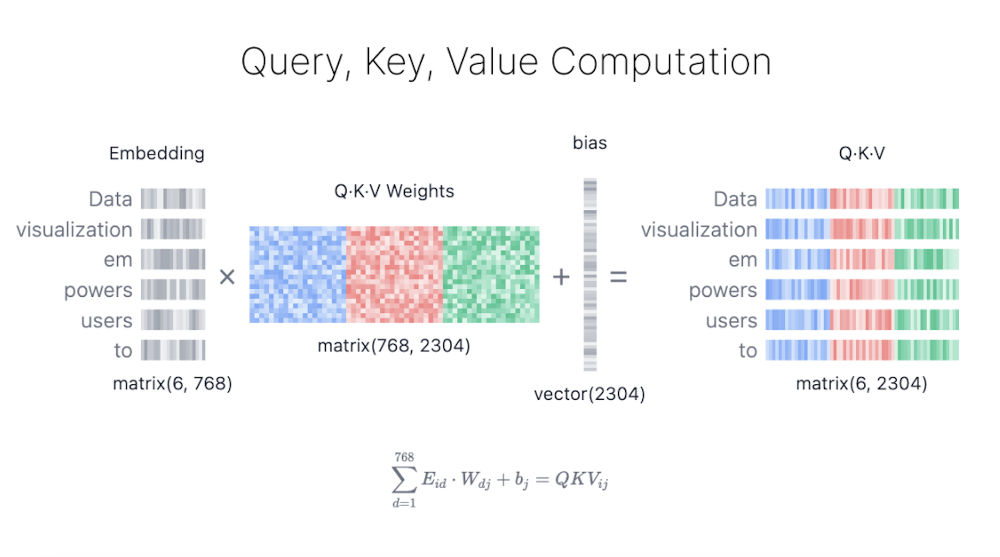
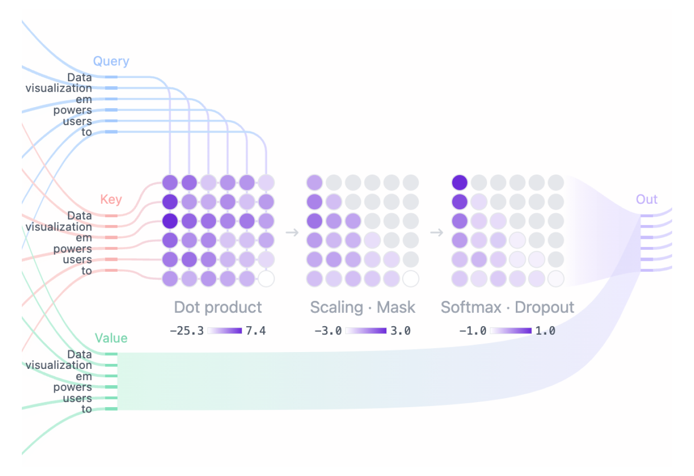
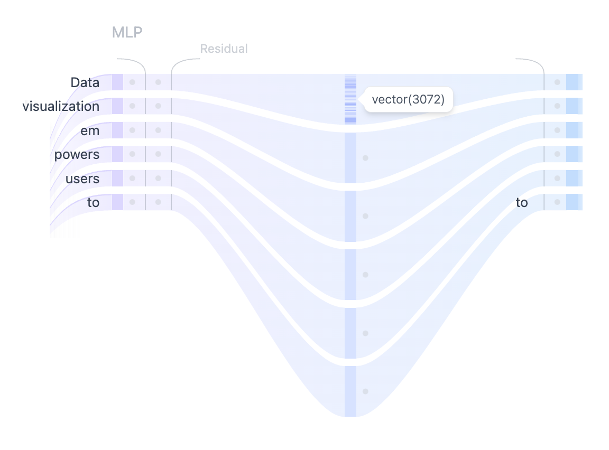
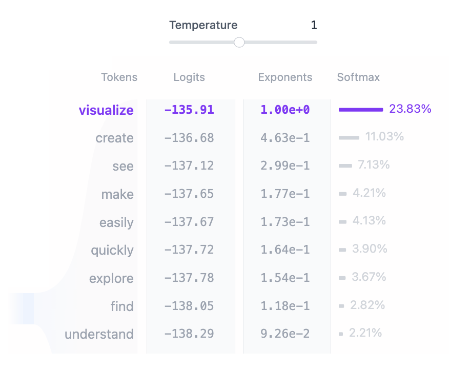

Transformer とは何か?
Transformer は、人工知能へのアプローチを根本的に変えてきたニューラル・ネットワーク・アーキテクチャです。Transformer は、2017 年に独創的な論文 "Attention is All You Need" で初めて紹介され、それ以来、ディープラーニング・モデルの定番アーキテクチャとなり、OpenAI の GPT、Meta の Llama、Google の Gemini などのテキスト生成モデルに採用されています。Transformer は、テキスト以外にも、 オーディオ生成, 画像認識, タンパク質構造予測、さらには ゲームプレイ, にも応用されており、さまざまな分野でその汎用性が実証されています。
基本的に、テキスト生成 Transformer モデルは、次の単語の予測の原理に基づいて動作します。つまり、ユーザーからのテキスト プロンプトが与えられた場合、この入力に続く可能性が最も高い次の単語は何でしょうか。Transformer の核となる革新性とパワーは、自己注意メカニズムの使用にあります。これにより、シーケンス全体を処理し、以前のアーキテクチャよりも効果的に長距離の依存関係をキャプチャできます。
GPT-2 ファミリーのモデルは、テキスト生成トランスフォーマーの代表的な例です。Transformer Explainer は、1 億 2,400 万のパラメータを持つ GPT-2 (小) モデルを採用しています。最新または最も強力なトランスフォーマー モデルではありませんが、現在の最先端のモデルと同じアーキテクチャ コンポーネントと原則を多く共有しているため、基礎を理解するための理想的な出発点となります。
Transformer アーキテクチャ
すべてのテキスト生成トランスフォーマーは、次の 3 つの主要コンポーネント で構成されています:
- 埋め込み: テキスト入力は、単語またはサブワードであるトークンと呼ばれる小さな単位に分割されます。これらのトークンは、単語の意味を捉える埋め込みと呼ばれる数値ベクトルに変換されます。
- Transformer ブロック は、入力データを処理および変換するモデルの基本的な構成要素です。各ブロックには次のものが含まれます:
- アテンション メカニズムは、Transformer ブロックのコア コンポーネントです。これにより、トークンが他のトークンと通信して、コンテキスト情報や単語間の関係をキャプチャできます。
- MLP (多層パーセプトロン) レイヤーは、各トークンを独立して操作するフィードフォワード ネットワークです。アテンション レイヤーの目的はトークン間で情報をルーティングすることですが、MLP の目的は各トークンの表現を洗練することです。
- 出力確率: 最後の線形レイヤーとソフトマックス レイヤーは、処理された埋め込みを確率に変換し、モデルがシーケンス内の次のトークンについて予測できるようにします。
Embedding
Transformer モデルを使用してテキストを生成するとします。次のようなプロンプトを追加します: “Data visualization empowers users to”（「データの視覚化により、ユーザーは） この入力は、モデルが理解して処理できる形式に変換する必要があります。ここで埋め込みが役立ちます。埋め込みは、テキストをモデルが処理できる数値表現に変換します。プロンプトを埋め込みに変換するには、1) 入力をトークン化し、2) トークン埋め込みを取得し、3) 位置情報を追加し、最後に 4) トークンと位置のエンコーディングを追加して、最終的な埋め込みを取得する必要があります。これらの各ステップがどのように実行されるかを見てみましょう。

Step 1: トークン化
トークン化とは、入力テキストをトークンと呼ばれるより小さく扱いやすい部分に分割するプロセスです。これらのトークンは、単語またはサブワードです。単語 "Data" と "vizualization" は一意のトークンに対応し、単語 "empowers" は 2つのトークンに分割されます。トークンの完全な語彙は、モデルをトレーニングする前に決定されます。GPT-2 の語彙には、50,257 個の一意のトークンがあります。入力テキストを異なる ID を持つトークンに分割したので、埋め込みからそれらのベクトル表現を取得できます。
Step 2. トークン埋め込み
GPT-2 Small は、語彙内の各トークンを 768 次元のベクトルとして表します。ベクトルの次元はモデルによって異なります。これらの埋め込みベクトルは、約 3,900 万個のパラメータを含む、形状 (50,257, 768) のマトリックスに格納されます。この大規模なマトリックスにより、モデルは各トークンに意味を割り当てることができます。
Step 3. 位置のエンコーディング
埋め込みレイヤーは、入力プロンプト内の各トークンの位置に関する情報もエンコードします。モデルによって位置エンコードの方法は異なります。GPT-2 は独自の位置エンコード マトリックスを最初からトレーニングし、それをトレーニング プロセスに直接統合します。
Step 4. 最後の埋め込み
最後に、トークンと位置エンコーディングを合計して、最終的な埋め込み表現を取得します。この組み合わせた表現は、トークンの意味と入力シーケンス内の位置の両方をキャプチャします。
Transformer ブロック
Transformer の処理の中核は、マルチヘッド セルフアテンションと多層パーセプトロン層で構成される Transformer ブロックにあります。 ほとんどのモデルは、複数のこのようなブロックが次々に積み重ねられて構成されています。 トークン表現は、最初のブロックから 12 番目のブロックまで層を経て進化し、モデルが各トークンの複雑な理解を構築できるようにします。 この階層化アプローチにより、入力の高次表現が実現します。
マルチ・ヘッド Self-Attention
Self-Attention メカニズムにより、モデルは入力シーケンスの関連部分に焦点を当てることができるため、データ内の複雑な関係や依存関係を捉えることができます。 この Self-Attention がどのように計算されるかを段階的に見ていきましょう。
Step 1: クエリ、キー、値のマトリックス

各トークンの埋め込みベクトルは、次の 3 つのベクトルに変換されます: クエリ (Q)、 キー (K)、 値 (V)。これらのベクトルは、入力埋め込み行列に、 Q、 K、 V の学習済み重み行列を掛け合わせることで得られます。これらの行列の背後にある直感を理解するのに役立つ Web 検索の例えを以下に示します:
- クエリ (Q) は、検索エンジン・バーに入力する検索テキストです。これは、「詳細情報を検索」 したいトークンです。
- キー (K) は、検索結果ウィンドウ内の各 Web ページのタイトルです。これは、クエリが対象とする可能性のあるトークンを表します。
- 値 (V) は、表示される Web ページの実際のコンテンツです。適切な検索語 (クエリ) と関連する結果 (キー) を一致させたら、最も関連性の高いページのコンテンツ (値) を取得します。
これらの QKV 値を使用することで、モデルは注目度スコアを計算し、予測を生成する際に各トークンにどの程度の焦点を当てるかを決定します。
Step 2: マスクされた Self-Attention
マスクされた Self-Attention により、モデルは入力の関連部分に焦点を当てながら、将来のトークンへのアクセスを防ぎ、シーケンスを生成できます。

- Attention スコア: クエリ 行列と キー 行列のドット積により、各クエリと各キーの配置が決定され、すべての入力トークン間の関係を反映する正方行列が生成されます。
- マスキング: モデルが将来のトークンにアクセスできないように、Attention マトリックスの上部の三角形にマスクが適用され、これらの値が負の無限大に設定されます。モデルは、将来を「覗き見」することなく、次のトークンを予測する方法を学習する必要があります。
- ソフトマックス: マスキング後、注目スコアは各注目スコアの指数を取るソフトマックス演算によって確率に変換されます。マトリックスの各行の合計は 1 になり、その左側にある他のすべてのトークンの関連性を示します。
Step 3: Output
モデルはマスクされた Self-Attention スコアを使用し、それを Value マトリックスと乗算して、 Self-Attention メカニズムの 最終出力 を取得します。GPT-2 には 12 個の自己注意ヘッドがあり、それぞれがトークン間の異なる関係をキャプチャします。これらのヘッドの出力は連結され、線形投影に渡されます。
MLP: Multi-Layer Perceptron

複数の自己注意ヘッドが入力トークン間の多様な関係を捕捉した後、連結された出力は多層パーセプトロン (MLP) 層に渡され、モデルの表現能力が強化されます。
MLP ブロックは、間に GELU アクティベーション関数を挟んだ 2 つの線形変換で構成されています。最初の線形変換では、入力の次元が 768 から 3072 へと4倍に増加します。
2番目の線形変換では、次元が元のサイズである 768 に縮小され、後続の層が一貫した次元の入力を受け取ることが保証されます。
Self-Attention メカニズムとは異なり、MLP はトークンを個別に処理し、1つの表現から別の表現に単純にマッピングします。
確率の出力
入力がすべての Transformer ブロックで処理された後、出力は最後の線形レイヤーに渡され、トークン予測用に準備されます。
このレイヤーは、最終的な表現を 50,257 次元空間に投影します。この空間では、語彙内のすべてのトークンに logit と呼ばれる対応する値があります。
どのトークンも次の単語になる可能性があるため、このプロセスにより、これらのトークンを次の単語になる可能性で簡単にランク付けできます。
次に、softmax 関数を適用して、logit を合計が 1 になる確率分布に変換します。
これにより、次のトークンをその可能性に基づいてサンプリングできます。

最後のステップは、この分布からサンプリングして次のトークンを生成することです。temperature ハイパーパラメータは、このプロセスで重要な役割を果たします。
数学的に言えば、これは非常に単純な操作です。モデル出力のロジットを temperature で単純に割るだけです:
temperature = 1: ロジットを 1 で割っても、ソフトマックス出力には影響しません。temperature < 1: temperature が低いと、確率分布がシャープになり、モデルの信頼性と決定性が向上し、より予測可能な出力が得られます。temperature > 1: temperature が高いと確率分布が柔らかくなり、生成されるテキストのランダム性が高まります。これは、モデルの創造性と呼ばれることもあります。
temperature を調整して、確定的な出力と多様な出力のバランスをとる方法を確認してください。
高度なアーキテクチャ機能
Transformer モデルのパフォーマンスを向上させる高度なアーキテクチャ機能がいくつかあります。 モデルの全体的なパフォーマンスには重要ですが、アーキテクチャのコア概念を理解する上ではそれほど重要ではありません。 レイヤー正規化、ドロップアウト、および残差接続は、特にトレーニング フェーズで Transformer モデルの重要なコンポーネントです。 レイヤー正規化はトレーニングを安定させ、モデルの収束を早めます。 ドロップアウトは、ニューロンをランダムに非アクティブ化することでオーバーフィッティングを防止します。 残差接続は、勾配がネットワークを直接流れるようにし、勾配消失の問題を防止するのに役立ちます。
レイヤー正規化
レイヤー正規化は、トレーニング プロセスを安定させ、収束を改善するのに役立ちます。 これは、機能全体の入力を正規化することで機能し、アクティベーションの平均と分散が一貫していることを保証します。 この正規化は、内部共変量シフトに関連する問題を軽減し、モデルがより効果的に学習できるようにし、初期重みに対する感度を低減するのに役立ちます。 レイヤー正規化は、各 Transformer ブロックで 2 回適用されます。1 回は自己注意メカニズムの前、もう 1 回は MLP レイヤーの前です。
ドロップアウト
ドロップアウトは、トレーニング中にモデルの重みの一部をランダムにゼロに設定することで、ニューラル ネットワークの過剰適合を防ぐために使用される正規化手法です。 これにより、モデルはより堅牢な機能を学習し、特定のニューロンへの依存度が減り、ネットワークが新しい未知のデータに対してより適切に一般化できるようになります。 モデル推論中は、ドロップアウトは無効になります。 これは基本的に、トレーニング済みのサブネットワークのアンサンブルを使用していることを意味し、モデルのパフォーマンスが向上します。
残差接続
残差接続は、2015 年に ResNet モデルで初めて導入されました。このアーキテクチャの革新により、非常に深いニューラル ネットワークのトレーニングが可能になり、ディープラーニングに革命が起こりました。 基本的に、残差接続は 1 つ以上のレイヤーをバイパスし、レイヤーの入力をその出力に追加するショートカットです。 これにより、勾配消失の問題が緩和され、複数の Transformer ブロックが互いに積み重ねられたディープ ネットワークのトレーニングが容易になります。 GPT-2 では、残差接続は各 Transformer ブロック内で 2 回使用されます。1 回は MLP の前、もう 1 回は後です。これにより、勾配がより簡単に流れるようになり、バックプロパゲーション中に前のレイヤーが十分な更新を受け取るようになります。
インタラクティブ機能
Transformer Explainer はインタラクティブに構築されており、Transformer の内部動作を探索できます。以下は、実際に使用できるインタラクティブ機能の一部です:
- 独自のテキスト・シーケンスを入力して、モデルがそれをどのように処理し、次の単語を予測するかを確認します。注意の重み、中間計算を調べ、最終的な出力確率がどのように計算されるかを確認します。
- temperature スライダーを使用して、モデルの予測のランダム性を制御します。 temperature 値を変更することで、モデル出力をより決定論的に、またはより創造的にする方法を探ります。
- アテンション・マップを操作して、モデルが入力シーケンス内のさまざまなトークンにどのように焦点を当てているかを確認します。トークンの上にマウスを移動してアテンションの重みを強調表示し、モデルが単語間のコンテキストと関係をどのようにキャプチャするかを調べます。
ビデオ・チュートリアル
Transformer Explainer はどのように実装されますか?
Transformer Explainer には、ブラウザで直接実行されるライブ GPT-2 (small) モデルが搭載されています。 このモデルは、Andrej Karpathy の nanoGPT プロジェクト による GPT の PyTorch 実装から派生したもので、ブラウザ内でシームレスに実行できるように ONNX Runtime に変換されています。 インターフェイスは JavaScript を使用して構築されており、フロントエンド フレームワークとして Svelte が使用され、動的な視覚化を作成するために D3.js が使用されています。数値は、ユーザー入力に従ってライブで更新されます。
Transformer Explainer を開発したのは誰ですか?
Transformer Explainer は以下のメンバーで開発されました。 Aeree Cho, Grace C. Kim, Alexander Karpekov, Alec Helbling, Jay Wang, Seongmin Lee, Benjamin Hoover, and Polo Chau at the Georgia Institute of Technology.